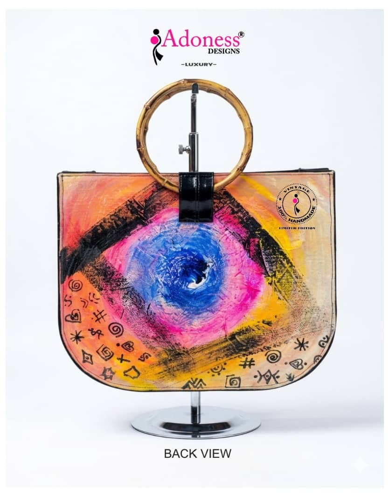
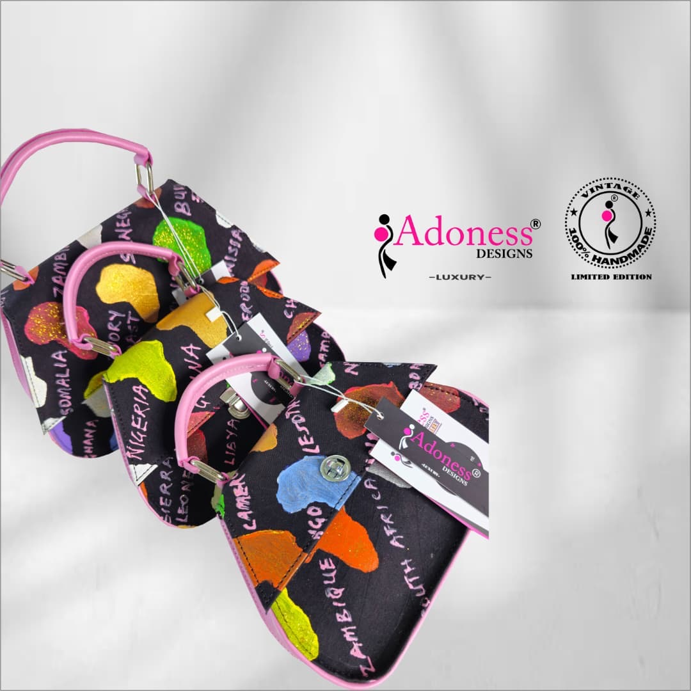
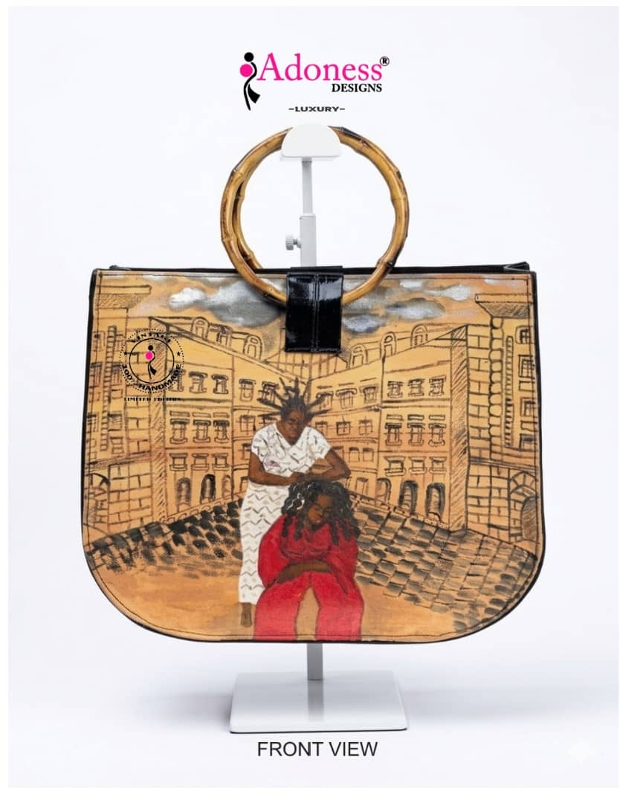

Cobalt and terracotta spiral tote
Sweeping arcs in cobalt, ivory and rust.
One-of-one handwoven totes, architectural clutches, and slow bag makeovers crafted cord by cord—built to hold weight, memory, and everyday life.



Sweeping arcs in cobalt, ivory and rust.
A fruit basket crowns the figure painted on the front.

A quiet moment of hair braiding fills the front panel.

Bands of colour circle a dark centre.
Painted shapes meet vivid pink handles.

A repeating triangle motif wraps the bag.
Every Adoness bag starts on a wooden frame and hand tension—never stamped from synthetic rolls. You choose the weave density, color rhythm, handle drop, and interior hardware.
Heavy cotton rope, natural raffia, satin cord, and metallic threads are paired for structure and sheen.
Each panel is woven row by row on custom jigs so corners stay crisp and walls stand upright on their own.
Structured cotton linings, magnetic clasps, and hand-braided handles are stitched in by hand.
“I nearly threw away a structured handbag whose faux leather had peeled completely. Adoness over-woven it in deep plum and magenta cord—now strangers stop me to ask where I bought it.”
“Most woven bags lose their shape the moment you put a laptop and notebook inside. The double-wall weave on my Adoness tote stands upright on its own every single day.”
“They matched the exact crimson and antique gold threads of my outfit into a hand-knotted clutch with my initials stitched inside the lining.”

Adoness Designs began with a fascination for structure built entirely by hand: how simple strands of cord, raffia, and thread gain architectural strength when interlocked under steady tension.
Instead of mass-produced accessories that peel after a single season, we weave bags meant to age with character—and rescue well-loved handbags from landfills through custom woven makeovers.
We accept a limited number of custom bag commissions and bag makeovers each month. Share your preferred silhouette, color palette, or restoration piece.